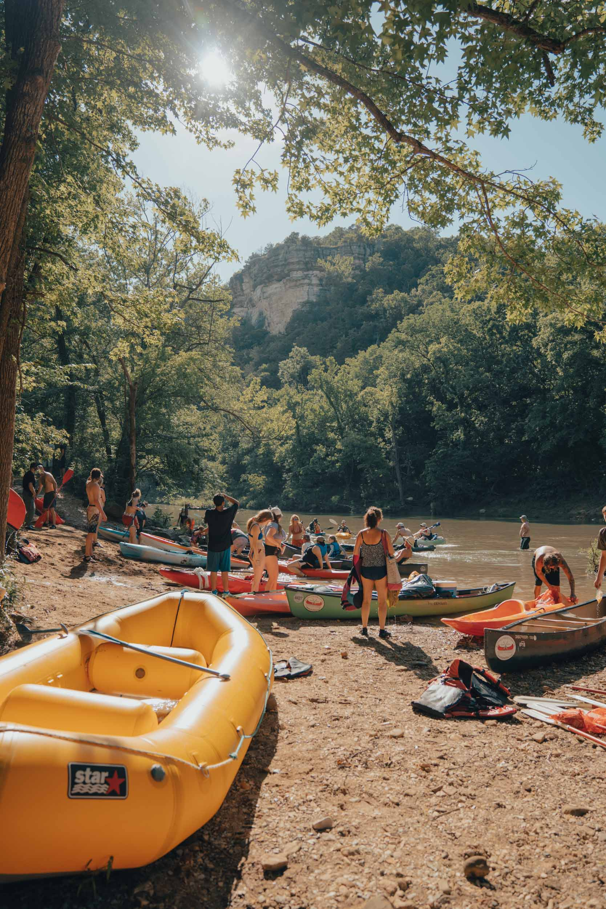
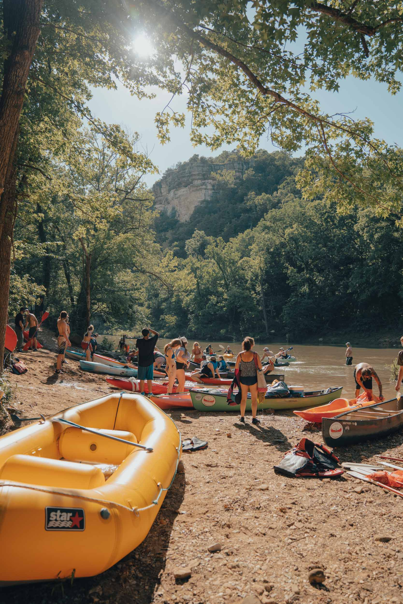

In 2022, Buffalo National River celebrates its 50th anniversary as a unit of the National Park Service. With plans underway to construct two hydroelectric dams on the Buffalo River in the Ozarks of northern Arkansas, the fate of the river and its surrounding communities was put on a national pedestal in the 1960s. A contentious battle among various interest groups emerged. Proponents of the dams argued for economic growth, flood control, power generation, and tourism to the local area. Opponents fought to preserve the scenic, recreational, and scientific values of one of the few remaining free-flowing rivers in the lower 48 states through a proposal to add the Buffalo to the national park system. Caught between a rock and a hard place, many local landowners just wanted to be left alone.After years of political push and pull, on March 1, 1972, the Buffalo River earned the designation of “national river”—the first of its kind in the national park system. It’s purpose is to preserve a free-flowing river and to conserve and interpret the combination of natural, scenic, cultural, and scientific features characterized by deep valleys, towering bluffs, wilderness, and landscapes of the Ozark Mountains.
In 2022, Buffalo National River celebrates its 50th anniversary as a unit of the National Park Service. With plans underway to construct two hydroelectric dams on the Buffalo River in the Ozarks of northern Arkansas, the fate of the river and its surrounding communities was put on a national pedestal in the 1960s. A contentious battle among various interest groups emerged. Proponents of the dams argued for economic growth, flood control, power generation, and tourism to the local area. Opponents fought to preserve the scenic, recreational, and scientific values of one of the few remaining free-flowing rivers in the lower 48 states through a proposal to add the Buffalo to the national park system. Caught between a rock and a hard place, many local landowners just wanted to be left alone.After years of political push and pull, on March 1, 1972, the Buffalo River earned the designation of “national river”—the first of its kind in the national park system. It’s purpose is to preserve a free-flowing river and to conserve and interpret the combination of natural, scenic, cultural, and scientific features characterized by deep valleys, towering bluffs, wilderness, and landscapes of the Ozark Mountains.
Frequently Asked Questions
I don't own any safety equipment, what do I do?
With every canoe rental, we provide life jackets and mesh litter bags.
Are there rules for visiting the Buffalo River?
There is! Visit: National Park Service website for more information on river safety and etiquette.
How often are river levels updated?
Daily, however you should also check your forecast app or tv channel for any updates on the upcoming weather.
Is my pet allowed at the park?
Yes both pets and service animals are allowed on park property, though we would strongly recommend keeping them on a leash at all times.
Are there hiking trails along the Buffalo?
The park encompasses over 95,000 acres that surround the free-flowing Buffalo, much of which is linked together by a growing network of trails to accommodate hiking and equestrian-based recreational activities. These trail systems also offer numerous side hikes to locations that showcase the natural and human history that have shaped the region.
Is there any other equipment I should bring?
Make sure to bring sunscreen, bug spray, water, and snacks. Also make sure to bring sturdy footwear if you plan on hiking!